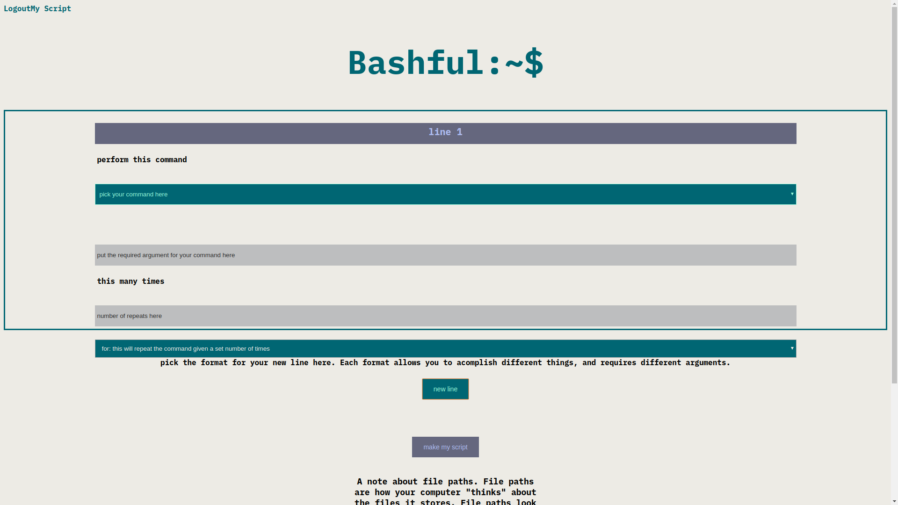
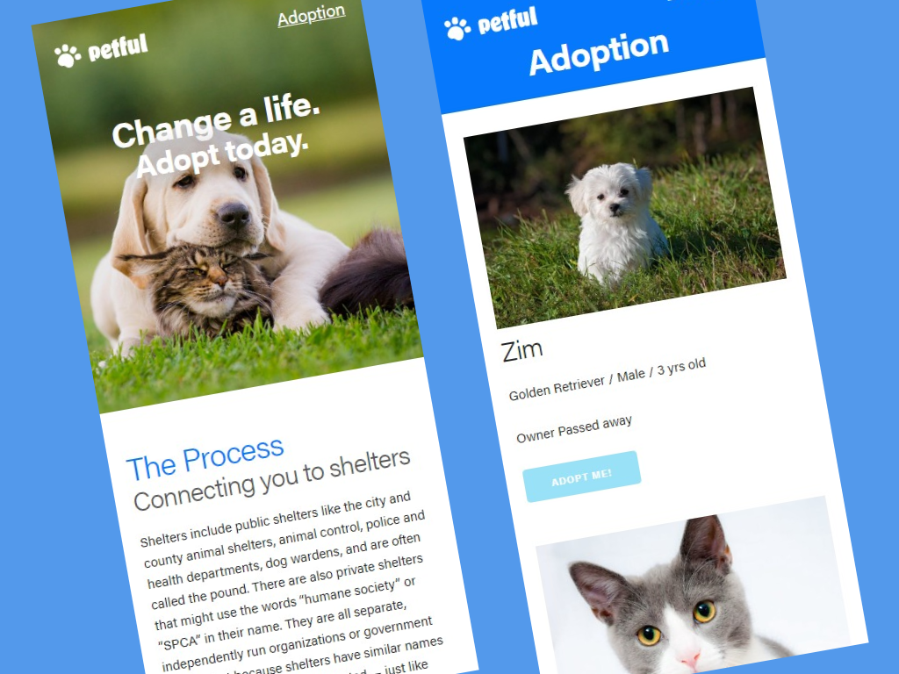

Ian Drews
BIO
Hi, there I'm Ian. I refresh web pages, read documentation and occasionally even get to write code.
I am experienced with React, Node, Express, PostreSQL, Sass, and Agile Development. I've created a number of fullstack web apps some of which you cans see bellow, I'm extremely motivated and enjoy working on challenging problems and coming up with novel solutions.
When I’m not doing any of that I like playing DND, baking and watching entirely too much Television.
Bashful
This is a simple bash script generator I made with the intention of giving people who are just getting started with the concept of writing scripts a more user friendly experience. It does still require a bit of an entry level knowledge of bash to get started.
Made with React, express, Postgresql,javascript, Node, Sass, bcryptjs, date-fns and Jsonwebtoken.
Live Site Client RepoServer Repo petful
This is a mockup of a pet adoption website operating on a first come first serve basis using a queue structure. It doesn't have a proper database and mostly was an exercise in using queue structures, however I'm very happy with how it worked out visually.
Live Site Client RepoServer Repo 